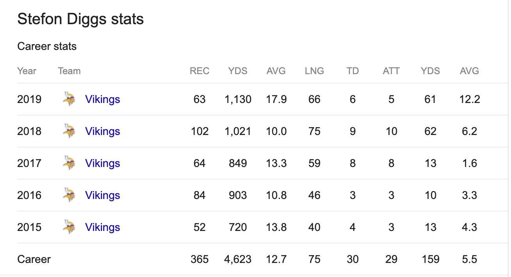

My favorite wide reicver of all time is Stefon Diggs. Also I met him in real life and got his autograph. Another thing about him is that he seems like a great guy. Also I would really like to go to a Vikings games next year and watch him score a touchdown.

